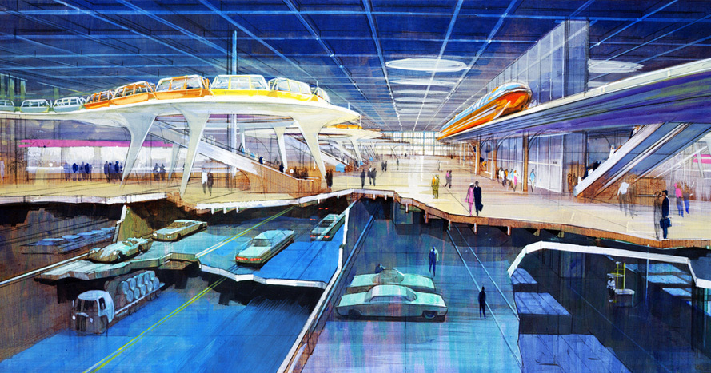

Original Design
1966
The Vision – Walt's Dream Explained
Walt Disney unveiled his concept for EPCOT in 1966—a city built from scratch to solve modern problems and showcase American ingenuity.
At its core was a climate-controlled downtown enclosed in a dome. Surrounding it: greenbelts, residential zones, schools, and industrial parks. Transportation would be futuristic: no personal cars, only monorails and PeopleMovers.
EPCOT would always be in a state of becoming—a place where technology was tested and ideas improved in real time.
"We're always planning for the future at Walt Disney World... but EPCOT is the heart of it all." – Walt Disney, 1966
The 1966 Film & EPCOT Model
The clearest expression of Walt's dream came in his 25-minute film, presented just two months before his death.
In October 1966, Walt filmed a presentation introducing his vision for EPCOT. This film included a narrated tour of a detailed scale model—complete with monorails, glass-domed centers, and radiating neighborhoods.
This film served two purposes: to inspire the public and to convince Florida lawmakers to support the Reedy Creek Improvement District, which gave Disney municipal-like control over its land.
Designing the city of tomorrow
EPCOT was conceived as a master-planned city with a radial design:
- A climate-controlled city center at its core
- Surrounded by residential greenbelts, schools, and community spaces
- Monorails for long-distance transport
- PeopleMovers for local travel
Everything would be clean, efficient, and constantly upgraded. No one would "own" their homes—residents would be part of an ever-evolving prototype.
Infrastructure & Innovation
Technology wasn't just a feature of EPCOT — it was the foundation.
Automation
Trash collection, climate control, and energy would be automatic and hidden underground.
Transportation
Roads for cars and trucks would be entirely underground. On the surface: monorails and PeopleMovers only.
Urban Core
The center of EPCOT featured offices, entertainment, and shopping—all walkable and covered by a giant dome.
Corporate R&D
Major companies would lease space to test and showcase real-world innovations in real-time.
"The most exciting and far-reaching challenge of all… is the development of a planned community." – Walt Disney
A Living Environment
Walt envisioned EPCOT as a living environment—not just a testbed for machines, but a better place for people to live.
Children would attend local schools. Adults would work at the industrial ring or inside the city center. Everything a resident needed—from groceries to recreation—was accessible via pedestrian paths or automated transit.
There would be no slums, no urban decay, and no static infrastructure. The city would always be changing—a permanent beta test for better living.
Community Zones
A Day in the Life
Commute & Arrival
Residents travel from greenbelt homes to the city center via PeopleMovers.
Work & School
Adults at industrial parks or city offices; children attend local schools.
Leisure & Errands
Access to shops, recreation, and community spaces via pedestrian paths.
Community Life
Enjoying the climate-controlled city center or returning home.
EPCOT Original Design Gallery